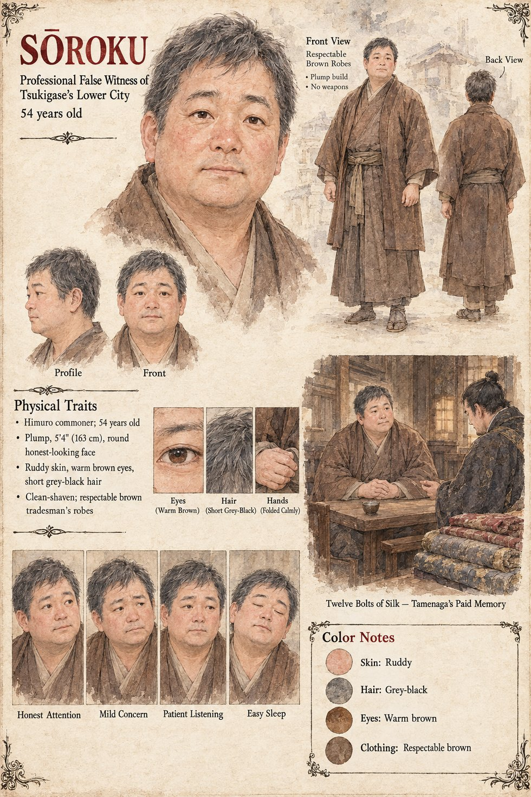

Sōroku
Professional false witness of the lower city of Tsukigase · fifty-odd by the manuscript, 54 by his sheet · fee, twelve bolts of silk
A man who makes a modest and respectable living out of having been standing in the correct doorway: fifty-odd, round-faced, dressed in the brown of a respectable tradesman, with an expression of such honest, unremarkable attention that no magistrate has ever thought to doubt him. Tamenaga knows him, as everybody in the lower city of Tsukigase knows a man like him. Asked over a pot of warm wine in a back room whether he recalls a certain remark made some years before, in a certain tavern, by a certain captain, about a certain weir, he recalls it in whatever detail the question suggests. He charges twelve bolts of silk. He feels nothing whatever about Higaide, whom he has seen once in his life at a distance of forty paces, and on the night he agrees to the commission he sleeps the sleep of a man who has sold a chair.
The story he tells, which Tamenaga merely arranges into its proper order, is true in every particular but one. Twenty-two years earlier the Tomobe family held a small estate at Higashino, and a boundary dispute over the Higashino weir was decided against them by the Left Ministry, then in the hands of a younger and more thorough Arikuni; Higaide's father, Nariyuki, was demoted two ranks and died, some years afterward, a bitter and reduced man. A child could have verified every detail, and nobody thinks to verify the one that is missing, that Higaide, twelve at the time, has never discussed the weir with anyone and has not thought of it in a decade. Sōroku supplies a tavern, a night and a few words said over wine by a young guard-officer about the Left Minister's family and the price of long memory. It has the shape of a motive, and shapes are what motives are made of in a court. By the twentieth of Eldren the tale is in the wine-houses, and the summons that says the motive has been established to the satisfaction of the Left Ministry is served on the twelfth of Garren. Years later Arikuni, who could have had him found in an afternoon, discovers that for the first time in his life he does not wish to audit a figure, and does not propose to ask whose silk it was that he had been grateful for. Sōroku is, very probably, prosperous.
Case 0202 has the same estate from the inside, in Higaide's memory: its steward, Genzō, and the year the weir was lost. The manuscript gives Sōroku's trade, his fee, his build in outline, his brown, his expression and the story. The sheet's 54 years, plump 5 ft 4 in frame, ruddy skin, warm brown eyes, short grey-black hair and clean-shaven face are its own, and so is its one scene, Twelve Bolts of Silk: Tamenaga's Paid Memory, in which he sits with his hands folded at a plain table, a cup before him, while a dark-haired man in a dark figured robe leans toward him and bolts of silk are stacked at the edge of the frame. The sheet does not say who the second man is. Its expression panels run Honest Attention, Mild Concern, Patient Listening and Easy Sleep.